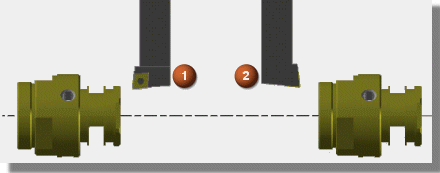
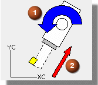

绕夹持器翻转刀具— 这个选项允许您将刀具翻转180度以使刀具加工相反的方向。

和安装时一样
翻转
这个功能允许您在部件从主主轴转移到子主轴时加工部件相反的一端，它允许您切削部件背部，免于定义更多刀具。
翻转刀具时，刀片位置将在顶部和底部之间有效切换，以允许系统维持正确的主轴旋转方向。
重定向刀具夹持器 — 这个选项允许您指定刀具夹持器固定朝前或朝后的旋转角度，平行于刀具夹持器并背离刀片的矢量将定义刀轴，指定的角度用于参考刀轴矢量，并相对于 WCS 旋转刀具夹持器，如果刀具是第一次翻转，应该使用负的角度。

刀具夹持器旋转
刀轴矢量
重定位刀具夹持器选项允许您使用一把刀具切削底部以及其它区域，不用这个控制将很难或根本不可能加工到。